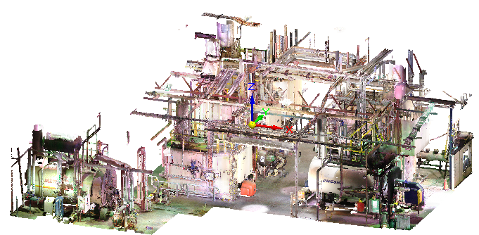
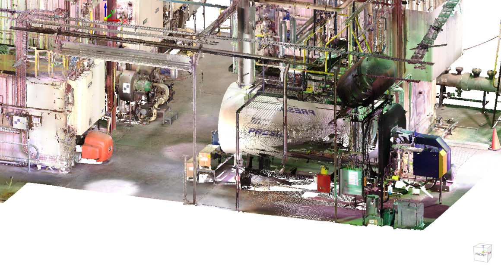
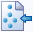
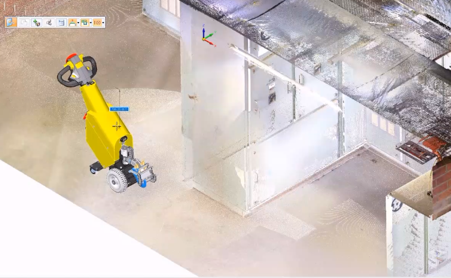
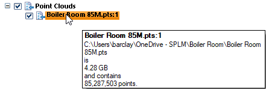

Using point clouds
Point clouds
In Solid Edge, you can view a point cloud scan while you design, modify, and measure equipment in the context of its surroundings.
In plant design and facility maintenance, a point cloud is a large-scale image, typically of a building, plant, or work site. It is used to visualize the size and fit of equipment and industrial machinery, before it is manufactured or installed. You can use this capability, for example, in brownfield equipment design, retrofitting work in infrastructure projects, or equipment layout design.
Point clouds provide a cost-effective alternative to an on-site visit, or when designing for an inhospitable environment, or when a site drawing or model is not available.
A point cloud file is captured through a laser scanner. The data in the file consists of millions of points, which initially appear as a cloud of tiny dots. Captured with each data point is information such as color, GPS coordinates, a reference coordinate system, and location markers.
This point cloud shows the type of information that can be captured by a laser scanner. The points resolve into more recognizable objects as you zoom in.


Referencing point clouds
You can use the Tools tab→Assistants group→Reference Point Cloud command

to create a graphic display from a point cloud file, and then design the assembly in this context. The Reference Point Cloud command creates a link from the assembly to the point cloud file, and lists it in Assembly PathFinder by file name.You also can design the assembly and equipment first, and then add the point cloud file to the document to verify placement and clearances.

For more information, see Reference a point cloud file.
Manipulating point cloud files in Solid Edge
The point cloud opens at the center of the base coordinate system of the assembly document. You can:
-
Move the point cloud using the Move Point Cloud shortcut command and the 3D steering wheel.
For more information, see Move a point cloud file.
-
Use the Zoom To command on the shortcut menu in PathFinder to zoom and center the point cloud in the graphics window.
-
Use the Point Cloud Options dialog box to set zoom, cache, and steering wheel defaults.
When you open a Solid Edge assembly that contains a point cloud reference in Keyshot, the point cloud is not rendered with the model.
Managing point cloud display
There are a variety of techniques you can use to finesse the point cloud display.
-
Reopen the Reference Point Cloud command bar to make changes by selecting the
 Edit Point Cloud Display command on the shortcut menu. For example, you can change the default color of the
points in the point cloud using the Color list on the command bar. You also can change the density of the points from the default
Maximum (100 percent) to Minimum (10 percent). The higher the density, the clearer the image resolution. The tradeoff
is the impact on performance.
Edit Point Cloud Display command on the shortcut menu. For example, you can change the default color of the
points in the point cloud using the Color list on the command bar. You also can change the density of the points from the default
Maximum (100 percent) to Minimum (10 percent). The higher the density, the clearer the image resolution. The tradeoff
is the impact on performance.For more information, see Edit a point cloud file.
-
To reference one area in the point cloud, you can use the Set Planes and Clipping On commands on the View tab to clip both the model and the point cloud display.
-
You can use commands on the Inspect tab→Measure group to measure the approximate distance between points in the cloud and points in the model and inquire.
-
You can use shortcut commands and check boxes to show, hide, and show-only an individual point cloud or all the point clouds.
Point cloud files
Opening a point cloud file does not import the data, it just creates a link to the location of the point cloud on disk.
For the purpose of measuring distances and locations, the first point cloud file opened determines the units Solid Edge uses to display it.
The point cloud file formats that are supported include *.asc, *.las, *.pts *.ptx, *.ply, *.rcp, *.rcs, *.stl, *.xyz.
Point cloud files typically are very large (thousands of MBs) with millions or billions of points, where point size=pixels/point, with a maximum of 10.
When you hover over a point cloud item in PathFinder, the tooltip displays the point cloud name, the file path, the file size, and the number of points.
